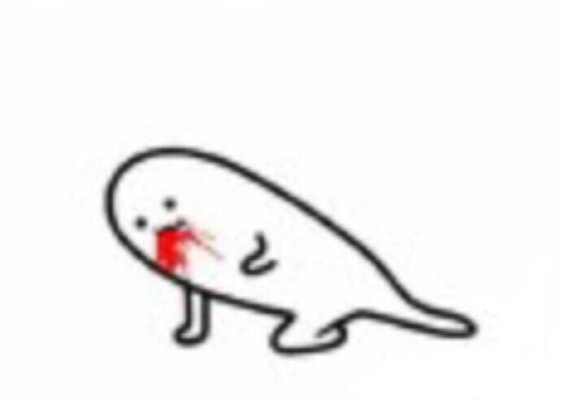
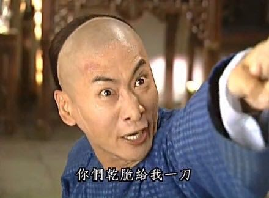

正文: 在女仆店打过工的壮汉怒答！！！
我高中的时候很喜欢动漫，所以听说我市开了女仆咖啡店之后就经常去玩。当时觉得：啊！在这里当女仆好爽啊！隔壁就是卖手办的动漫王国，可以看到很多手办周边之类的，而且客人大都是喜欢动漫的人，感觉比较单纯也聊得来，而且基本上来女仆店都是玩游戏看漫画，好像除了点单出菜品也不是很累，最重要的是可以打扮的hin阔爱去上班，穿小裙子，扎双马尾也不违和！啊！好想在女仆店上班啊！
蓝后，大一寒假还没到，我就想着要找个兼职锻炼一下自己，首先想到的当然就是女仆咖啡啦。
于是给店长邮箱发了一份简历，店长就说那你元旦先来试试吧，可以的话寒假继续干。
当时我还不知道那是我人生中最。苦。逼。的一天。
以前我在店里玩的时候店里一般也得有有三四个女仆，那天早上店长说：今天就你一个人当班喔，我负责做饭。
我：excuse me，are u 逗我ing？店长解释道：最元老级的那些女仆陆续都毕业要找工作或者结婚了，现在基本都是兼职，招不到人。
所以，根。本。没。前。辈。带。我。
没事！！你南最机智了！！风雨中这点痛算什么！！我可以的！！我能行！！我不是一般人！！
后来才发现我果然是图样图森破，其实我根本没有理解一个人当班到底意味着什么（。
客人摁门铃之后，我要推开拉门说：お帰りなさい
然后引客人到位子去，
接着把菜单给客人，并放置一个摇铃。
客人决定好之后，摇响摇铃呼叫女仆点单。
下单之后，食物准备好后，端上来。
客人吃完结帐，引客人出门，鞠躬送走客人。
回来把桌子收好，餐具放进水池。
积累到一定程度的餐具后，统一清洗。
以上，全。部。是。我。一。个。人。做。
可能有些人看完之后觉得还挺简单的嘛，流程也挺清晰，没什么好乱的啊。
可是，胖友们，不要忘了，那天是元旦。是元旦。是元旦。（重要的旦，元三遍。）
所以我不是只服务一桌客人就完事了，胖友。
那天的情形回想起来，我的心情依然是这桌客人摇完铃后还在犹豫要点什么，旁边的客人就开始摇铃要点单或者催单，还有让我帮忙开游戏机找游戏的，问我某某桌游牌在哪儿让我帮忙找的，还有说：xx漫画书上次我来还有怎么找不到了你帮我找一下的，还有坐着外面的某个位子点完单之后不打招呼直接坐到里屋的（单号即是座位号，换位子会影响上菜）
除了客人不断抱怨还要忍受店长的批评（。
OK，这些是我的工作内容，我之前有觉悟的，你一件一件来我不会怎么样的，但是，当这些全集中到一个时间，我只想大喊：看我72变！！！分身术！！！
期间店长跟我聊天，她说：虽然今天我也批评过你几次，但说实话你挺能干的，而且反应也比较快，今天这么忙我以为你坚持不下来的，客流量比平时多一倍，人还就你一个，之前有来应聘的小女孩比这情况好多了都坚持不下来。本来打算试用你一周的，给你缩短为三天，好好干，你有当店长的潜质。
我：呜呜呜谢谢店长！！！
一切准备完之后，快要关门了，我心想：啊！！终于结束了QAQ！！
结果，店长递过来一个超长的单子，说：今天辛苦了，明天早上来上班之前把这些东西买一下，一定要买齐哦～
我：
宝宝很委屈，宝宝想说。